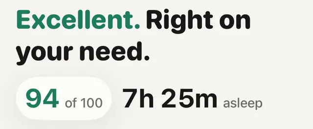

Útmutató
Az Apple saját skáláján 81 ponttól jó az éjszaka: a 81–95 sáv neve a magyar felületen „Maximum”, 96-tól „Nagyon magas”, a 61–80 pedig „OK”. A hasznosabb válasz azonban személyes. Ha a pontszámod a legtöbb éjszakán a saját szokásod közelében marad, az jó jel. Ha újra meg újra alá csúszik, azzal érdemes foglalkozni, sokkal inkább, mint egyetlen reggel számával.
Ez az útmutató arról szól, mi van az Apple pontszáma mögött, mitől jó egy éjszaka a kutatások szerint, és mit tehetsz, ha alacsony a számod. Hogy általában mi az alvási pontszám, és miért nem az alvásszakaszoknak kellene irányítaniuk, azt a what a sleep score actually means jegyzet írja le (angolul).
Az Apple a watchOS 26-tal vezette be az alvási pontszámot, Apple Watch Series 6 vagy újabb, SE (2. generáció) vagy újabb és minden Ultra modell számára. Ébredés után jelenik meg az Apple Watch Alvás appjában, az iPhone Egészség appjában pedig hosszabb távon is követheted. Az Apple szerint a módszer az American Academy of Sleep Medicine, a National Sleep Foundation és a World Sleep Society ajánlásait követi, és több mint 5 millió éjszaka adatain fejlesztették és tesztelték az Apple Heart and Movement Study-ból. Az Apple támogatási oldalai szerint 0 és 100 közötti szám, három részből:
Az Apple Watch felhasználói útmutatója így nevezi meg a sávokat: Nagyon alacsony (0–40), Minimum (41–60), OK (61–80), Maximum (81–95) és Nagyon magas (96-tól). A watchOS 26.2-ben az Apple finomított ezeken a besorolásokon, ezért régebbi cikkekben más határokat is olvashatsz. Ahhoz, hogy egyáltalán kapj pontszámot, be kell kapcsolni az „Alvás követése az Apple Watchcsal” beállítást, és az órát az ágyban is viselni kell. Az Apple nem közli az egyes részek pontos görbéjét, ezért ez az útmutató sem találgat. Ha a pontszámra, majd az info gombra koppintasz, az Apple saját magyarázatát látod.
Elég alvás. Az American Academy of Sleep Medicine és a Sleep Research Society azt ajánlja, hogy a felnőttek rendszeresen legalább 7 órát aludjanak éjszakánként (Watson és munkatársai, 2015). A National Sleep Foundation szakértői testülete a felnőttek többségénél 7–9 órát tart megfelelőnek (Hirshkowitz és munkatársai, 2015). Az igény emberenként eltér, ezért érdemes elolvasni a how much sleep you actually need jegyzetet (angolul). Az ágyban töltött idő és az alvással töltött idő nem ugyanaz: time asleep vs time in bed.
Az Apple pontszámának fele egyszerűen az, mennyit aludtál.
Megszakítás nélküli alvás. Amikor a National Sleep Foundation leírta, miről ismerhető fel a jó alvásminőség, a fő jelek között szerepelt, mennyi idő alatt alszol el, hányszor ébredsz fel, és mennyi időt töltesz ébren az első elalvás után (Ohayon és munkatársai, 2017). Az Apple megszakítások része ezt próbálja megragadni.
Rendszeres időzítés. A UK Biobank több mint 60 000 résztvevőjénél, akik egy hétig csuklón viselt érzékelőt hordtak, az alvás rendszeressége erősebben jelezte előre a halálozási kockázatot, mint az alvás hossza (Windred és munkatársai, 2024). Ez megfigyeléses vizsgálat, tehát összefüggést mutat, nem bizonyítékot, de illeszkedik a belső órával foglalkozó kutatások sorába. Bővebben: does sleep regularity matter more than duration?
Az alvásszakaszok becslések. Az Apple az egyes alvásszakaszokban töltött időt is az alvásminőséget befolyásoló tényezők közé sorolja, de a három pontozott rész között, amelyet megnevez, nem szerepelnek. Akármekkora szerepük van, ne kezeld őket túl komolyan: a fogyasztói eszközöket alváslabori méréssel (poliszomnográfiával) összevető vizsgálatok szerint az eszközök az alvást és az ébrenlétet jobban meg tudják különböztetni, mint az egyes szakaszokat (Chinoy és munkatársai, 2021; Miller és munkatársai, 2022). Lásd: watch sleep stages are an estimate.
Egy-egy éjszaka hétköznapi okokból is ingadozik: késői vacsora, egy pohár bor, meleg hálószoba, utazás, kemény edzésnap, zajos utca. Egy lagzi utáni 65 pont keveset mond. Öt éjszaka 60 körül, amikor egyébként 85 felett szoktál lenni, sokkal többet.
Egy lagzi utáni 65 pont keveset mond. Öt éjszaka 60 körül sokat.
A sávok ráadásul mindenkinek ugyanazok, az alvásigény viszont nem. Aki 7 órával jól elvan, és minden este ugyanakkor fekszik le, a legtöbb éjszakán a felső sávban lehet. Aki műszakban dolgozik vagy kisbabája van, ritkán jut el oda, és neki az a hasznosabb kérdés, hogy ez a hét jobb vagy rosszabb-e a saját szokásánál. A hiányzó alvás több éjszakán át össze is adódik: what sleep debt is. Hogy miért önmagadhoz kell mérni: why a watch should compare you to yourself.
Az alvási pontszám csuklón mért becslések összefoglalása, nem diagnózis, és egy jó pontszám sem zárja ki az alvászavart. Fordulj orvoshoz, ha hangosan horkolsz, ha a partnered látta, hogy alvás közben kimarad a légzésed vagy levegő után kapkodsz, ha napközben álmos vagy, pedig eleget töltesz ágyban, vagy ha az elalvási vagy átalvási gondok hetekig tartanak. Általában ezek a jelek vezetnek egy rendes alvásvizsgálathoz (Kapur és munkatársai, 2017). Ez az oldal általános tájékoztatás, nem orvosi tanács.

Az Aera saját alvási pontszámaAz Aera 0 és 100 között pontozza az éjszakát, és szót is ad hozzá, 85-től Kiváló. Mellette az alvásidő, és hogy mihez képest: a saját éjszakáidból tanult alvásigényedhez. Koppints a pontszámra, és látod, hová mentek a pontok.
Az Aera, iPhone-ra és Apple Watch-ra
Az Aera saját alvási pontszámot számol abból az alvásból, amit az órád az Apple Health-be ír, ezért nem egyezik pontosan az Apple számával. 0 és 100 közötti, öt részből: alvásidő a saját alvásigényedhez mérve (35 pont), mennyire volt megszakítás nélküli az éjszaka (32), alvás közbeni pulzusod a szokásodhoz mérve (15), alvásszakaszok (10, szándékosan kevés, mert a csuklóról becsült szakaszok csak becslések) és éjszakai HRV (8). Az alvásigényedet a saját éjszakáidból tanulja meg, de sosem számol 7 óránál kevesebbel. Egy 6 óránál rövidebb alvás nem kaphat 55 pontnál többet.
Ha a pontszámra koppintasz, az Aera megmutatja, hogyan oszlott meg aznap éjjel a 100 pont, és megnevezi, melyik rész vitte el a legtöbbet, például az ébredéseket és a perceiket. Minden részhez tartozik egy cikk a Field Guide-ban, ami megmutatja, hogyan készül, és hol szűnik meg megbízhatónak lenni. Nincs fiók, az egészségadatokat az iPhone-od számolja ki. Az alvási pontszám, a bontása és a cikkek ingyenesek; az Alvásbank, vagyis az éjszakáról éjszakára vezetett egyenleged az alvásigényedhez képest, a Premium része. Az egész alkalmazás magyarul van.
Az Aera nem orvostechnikai eszköz. Az óra csak becsli az alvásszakaszokat, ezért kevesebbet számítanak, és az Aera ezt meg is mondja.
Az Apple 0 és 100 között pontoz, és öt sávot nevez meg, a magyar felületen így: Nagyon alacsony (0–40), Minimum (41–60), OK (61–80), Maximum (81–95) és Nagyon magas (96-tól). A 81 és 95 közötti sáv az Apple saját skáláján jó éjszakát jelent. Minden egyes számnál többet mond, hol szoktál lenni: ha egy hét a saját szokásod közelében marad, az jó jel, akkor is, ha ritkán éred el a legfelső sávot.
Az Apple szerint a pontszám három részből áll: az alvás időtartama (legfeljebb 50 pont), a lefekvés rendszeressége (legfeljebb 30 pont), amely azt nézi, mikor aludtál el az elmúlt 13 éjszakán, és a megszakítások (legfeljebb 20 pont), amelyek azt nézik, milyen gyakran ébredtél fel, és mennyi ideig voltál ébren.
Az időtartam csak a pontszám fele. Ha a szokásosnál jóval később aludtál el, az a rendszerességnél visz el pontokat, a több vagy hosszú ébredés pedig a megszakításoknál. Egy késői éjszaka néhány korai után akkor is lehúzhatja a pontszámot, ha az órák rendben voltak.
Többnyire nem. Egy késői vacsora, egy pohár bor, utazás, meleg szoba vagy egy kemény nap lehúzhat egy éjszakát. Nézd a mintát egy-két héten át. Ha több éjszaka egymás után alacsony, vagy a legtöbb reggel kialvatlan vagy, azzal érdemes foglalkozni.
Fordulj orvoshoz, ha hangosan horkolsz, ha valaki látta, hogy alvás közben kimarad a légzésed vagy levegő után kapkodsz, ha napközben álmos vagy, pedig eleget töltesz ágyban, vagy ha az elalvási vagy átalvási gondok hetekig tartanak. Egy órás pontszám nem zárja ki az alvászavart.
Kapcsolódó jegyzetek (angolul): mit jelent valójában az alvási pontszám · mennyi alvásra van valójában szükséged · fontosabb-e a rendszeresség a hossznál? · mi az alvásadósság
Kapcsolódó útmutató: Fussak ma, ha rosszul aludtam?